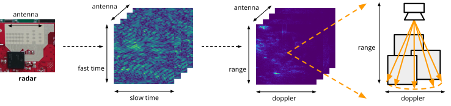
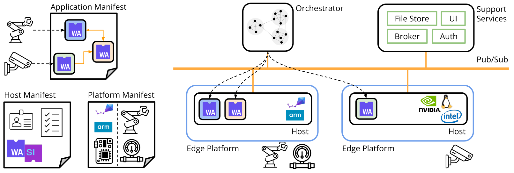
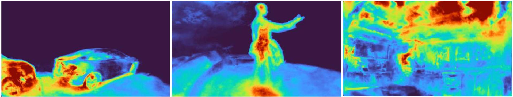
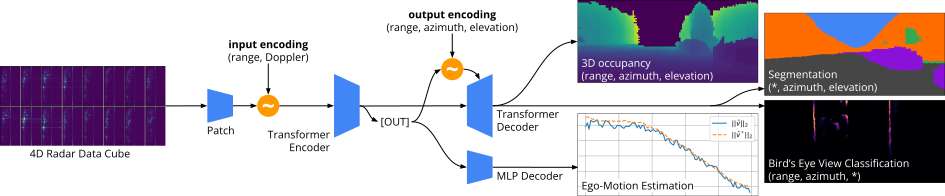
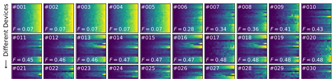
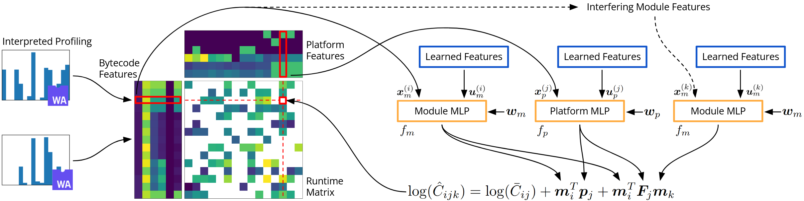
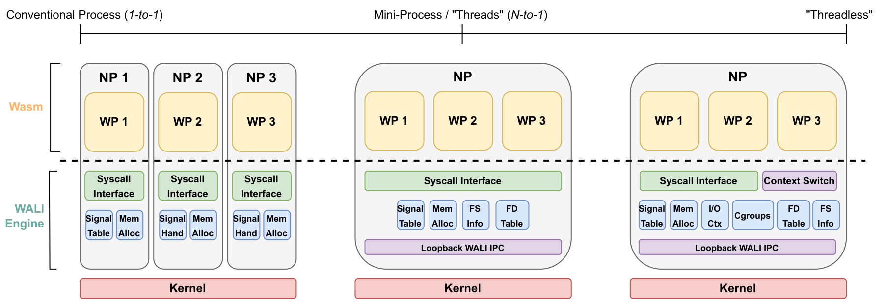
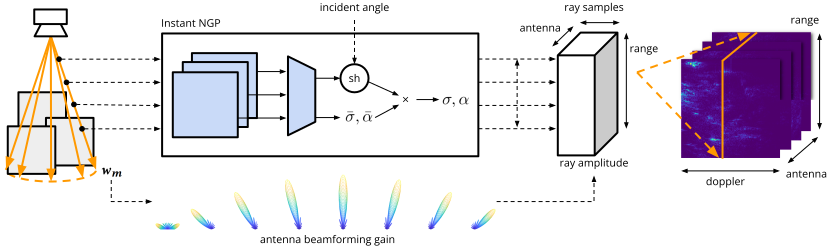
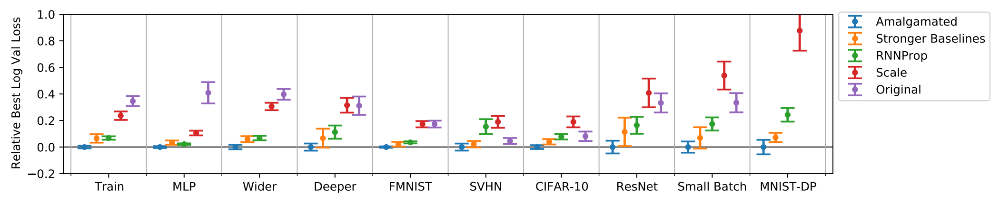

Tianshu Huang / Research

My past and current work spans a wide range of topics in machine learning, including large transformer models (ICCV '25), statistical learning (MLSys '25), NeRF-style neural-implicit inverse rendering (CVPR '24), and meta-learning (ICLR '22). I also actively support systems researchers by providing machine learning, statistics, and data science expertise (OOPSLA '25, RTAS '25, EuroSys '25), while also supporting machine learning researchers working with real-world sensors and systems.
Currently, I'm focused on scaling and building out foundational models for low-level spectrum-based radar perception, as well as establishing an ecosystem and community for radar research more broadly via the RadarML open source initiative and Radar Interest Group @ CMU.
PhD Thesis: Learning on Spectrum for Radar-Enabled 3D Perception
3D perception systems should use learning-based methods on unfiltered 4D spectra. When fused with cameras and trained at scale, spectrum-based systems will far outperform classical signal processing-based methods, and match the quality of lidar-based systems even when using only low-cost single-chip radars.
Committee: Anthony Rowe, Carlee Joe-Wong, Deva Ramanan, Zico Kolter
Machine Learning for Radar
Radars are an ideal complement to cameras for applications such as autonomous driving: both are inexpensive, solid-state sensors, with cameras boasting fine angular resolution and radars providing depth resolution and robustness to adverse conditions. Unfortunately, unlike visual images or Lidar points, radar data are harder to interpret, and lack a large body of existing research. In this project, my goal is to develop machine learning-based methods to interpret radar data both spatially and semantically, potentially replacing Lidar as the primary means of 3D perception in robotics and beyond.

Learning for Distributed Systems
Recent advances in lightweight, bytecode-based virtualization — WebAssembly — raise the possibility of flexibly executing distributed programs in heterogeneous environments. While this promises substantial opportunity for optimizing over static, homogenous deployments, exploiting this opportunity requires mastering key building blocks for managing distributed systems. Along with my collaborators, I explore key concerns including orchestration, performance analysis, as well as debugging and anomaly detection. My approach emphasizes going beyond black-box approaches (in both a statistical and a systems sense) using techniques like instrumentation injection and statistical machine learning approaches.

Publications
Implicit Surface Compression — with Good Old Discrete Cosine Transform and Motion Compensation
Tao Jin, Shengxi Wu, Tianshu Huang, Mallesham Dasari, Srinivasan Seshan, Anthony Rowe
ACM Transactions on Graphics•(SIGGRAPH 2026)
Popular representations for 3D geometry such as meshes and point clouds are spatially and temporally discontinuous, and thus difficult to compress. Using implicit surface representations which are spatially continuous and temporally stable enables a simple compression scheme based on classical video coding paradigms to achieve order-of-magnitude bitrate reduction.

RadarSim: Simulating Single-Chip Radar via Multimodal Neural Fields
Chuhan Chen, Tianshu Huang, Akarsh Prabhakara, Chaithanya Kumar Mummadi, Zhongxiao Cong, Anthony Rowe, Matthew O'Toole, Deva Ramanan
3DV 2026
While radar reconstructions can accurately capture radar-specific properties, they are fundamentally limited by the low resolution of the underlying sensor. We propose a unified differentiable renderer, RadarSim, which leverages the high angular resolution of RGB cameras to generate Doppler radar range images with accurate radar properties from a camera-initialized neural field.

Towards Foundational Models for Single-Chip Radar
Tianshu Huang, Akarsh Prabhakara, Chuhan Chen, Jay Karhade, Deva Ramanan, Matthew O'Toole, Anthony Rowe
ICCV 2025•Oral Presentation — Top 0.57% (64/11152) of all submissions
With enough training data, transformer models can extract 3D outputs of surprising quality from indexpensive, low-resolution single-chip radar. These models scale well with additional training data, and can generalize across different settings and be readily fine tuned for new tasks.

Unveiling Heisenbugs with Diversified Execution
Arjun Ramesh, Tianshu Huang, Jaspreet Singh Riar, Ben Titzer, Anthony Rowe
OOPSLA 2025•Artifact Available — Artifact Functional — Results Reproduced
Heisenbugs - bugs which change their behavior under observation - are among the toughest challenges when debugging programs. We propose to catch these bugs using stochastic instrumentation, and demonstrate the surprising effectiveness of debugging across a diverse set of platforms.

Interference-Aware Edge Runtime Prediction with Conformal Matrix Completion
Tianshu Huang, Arjun Ramesh, Emily Ruppel, Nuno Pereira, Anthony Rowe, Carlee Joe-Wong
MLSys 2025•Artifact Available — Artifact Functional
Performance prediction in heterogeneous systems such as edge computing is best formulated as matrix completion, which can be extended to handle complex, edge-specific concerns such as interference and uncertainty quantification.

Silverline: Lightweight Virtualization and Orchestration of Distributed Systems
Arjun Ramesh, Tianshu Huang, Emily Ruppel, Dakshina Dasari, Behnaz Pourmohseni, Fedor Smirnov, Marco Giani, Paolo Pazzaglia, Charles Shelton, Nuno Pereira, Arne Hamann, Dirk Ziegenbein, Anthony Rowe
RTAS 2025
We develop Silverline: a framework for programming heterogeneous dynamic distributed systems. Using WebAssembly as a lightweight virtualization framework, we design silverline to be fault-tolerant and real-time, and show it in use on industrial-grade systems.
Empowering WebAssembly with Thin Kernel Interfaces
Arjun Ramesh, Tianshu Huang, Ben Titzer, Anthony Rowe
EuroSys 2025•Artifact Available — Artifact Functional — Results Reproduced
Webassembly (Wasm) adoption for new domains is often hindered by the lack of standard system interfaces. We propose directly exposing OS userspace syscalls as a compromise.

DART: Implicit Doppler Tomography for Radar Novel View Synthesis
Tianshu Huang, John Miller, Akarsh Prabhakara, Tao Jin, Tarana Laroia, Zico Kolter, Anthony Rowe
CVPR 2024•Oral Presentation — Top 0.78% (90/11532) of all submissions
We propose DART — Doppler Aided Radar Tomography, a Neural Radiance Field-inspired approach to radar novel view synthesis using implicit neural inverse imaging.

Optimizer Amalgamation
Tianshu Huang, Tianlong Chen, Sijia Liu, Shiyu Chang, Lisa Amini, Zhangyang Wang
ICLR 2022
While meta-training optimizers from scratch is difficult, much attention has been directed towards developing a diverse body of analytical optimizers. Can we use these optimizers to meta-train a stronger optimizer?

Patents
Active Method for predicting resource usage for applications in a distributed system
November 2025
• US 12,463,919
• Robert Bosch GmbH, Carnegie Mellon University
Pending Generation and use of synthetic radar views of a scene
Filed, October 2024
• WO2025131366A1 (WO DE)
• Robert Bosch GmbH
Pending Method for detecting a memory access error in a multi-threaded application
Filed, September 2024
• US20250117309 (US JP KR DE)
• Robert Bosch GmbH, Carnegie Mellon University
Pending Method for Predicting the Performance of a Software Program
Filed, March 2024
• US20250077389 (US CN DE JP)
• Robert Bosch GmbH, Carnegie Mellon University
Pending Method for carrying out a decision for upgrading and/or deploying software on multiple heterogenous devices
Filed, December 2023
• US20240211241A1 (US CN DE)
• Robert Bosch GmbH, Carnegie Mellon University
Conference & Invited Talks
-
Towards Foundational Models for Single-Chip Radar
ICCV 2025 Main Conference Talk -
Towards Foundational Models for mmWave Radar
Invited Talk @ Bosch Research Sunnyvale, September 2025 -
Interference-aware Edge Runtime Prediction with Conformal Matrix Completion
MLSys 2025, Conference Presentation -
The Radar Spectrum 2.0
With Bosch Collaborators
2025 Signal Processing Colloquium @ Bosch Research -
Towards Foundational Models for mmWave Radar
Invited Talks @ Bosch Research (January / September 2025), Bosch Mobility (February 2025) -
Grey-Box Program Analysis: Runtime Prediction and Beyond
Reliable Distributed Systems Tech Colloquium @ Bosch Research, October 2024 -
DART: Implicit Doppler Tomography for Radar Novel View Synthesis
CVPR 2024, Main Conference Oral Presentation -
Leveraging Wasm instrumentation
With Arjun Ramesh
WebAssembly Research Day 2023 -
Giving the Cloud an Edge with WebAssembly
With Arjun Ramesh
WebAssembly Research Day 2022
Casual Presentations
-
The NeRF is Dead ... Long Live the NeRF
(2022) In a post-NGP landscape, what's a NeRF anyways? -
Topics on the Edge (of Federated Learning)
(2022) What challenges arise in federated learning on edge devices?